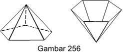

Pada bab sebelum ini kita melihat bahwa tiga di antara lima zadat Plato (caturtira, astatira dan wimsatitira) diragang dari bidang segitiga.

Bidang segitiga juga digunakan untuk meregang limas yang menjorok, baik ke dalam maupun ke luar, yang terbuat dari bidanbahutira. Karena itu bidang dalam rancangan trimatra, dan tidak dapat diabaikan